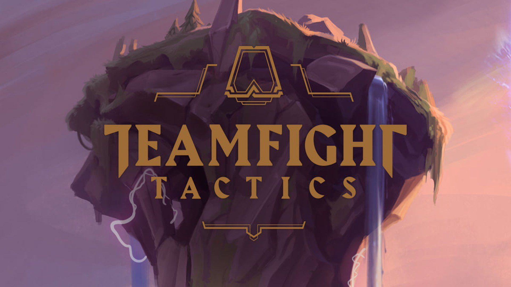

Teamfight Tactics
เป็นเกมวางแผนต่อสู้โดยมีแชมเปี้ยนที่โดดเด่นจาก League of Legends เป้าหมายของคุณคือสร้างทีมที่ใหญ่ขึ้นและปกป้องบอร์ดของคุณเพื่อเป็นคนสุดท้ายที่ยืนหยัด นี่เป็นข้อมูลพื้นฐานต่าง ๆ ที่คุณต้องรู้ก่อนเริ่มเล่น
Teamfight Tactics เป็นการต่อสู้ PvP อัตโนมัติแบบผลัดกันเล่น คุณจะต้องจัดทีมต่อสู้อัตโนมัติสู้กับแฝดนรกของคุณ หากคุณไม่เคยเล่นแนววางหมากต่อสู้อัตโนมัติมาก่อน ไม่ต้องกังวลไป! TFT ได้ยืมคอนเซ็ปต์เกมวางแผนมากมายที่คุณชื่นชอบ เช่น แย่งทรัพยากรกันในตอนเริ่มเกม จัดทีม บริหารเงินในกระเป๋าของคุณ ไปจนถึงการวางตำแหน่ง
วิธีเล่นเป็นแบบนี้: คุณจะเผชิญหน้ากับผู้เล่นอื่นตัวต่อตัวจนกว่าจะเหลือคนสุดท้าย คุณจะชนะจากการมีทีมที่ดีสุดที่คุณจัดได้ โดยการรวบรวมแชมเปี้ยนต่าง ๆ สวมใส่ไอเทมแข็งแกร่งให้พวกเขา บริหารทองให้ดีเพื่อเอาชนะการแข่งขัน และวางตำแหน่งทีมของคุณให้อยู่ในรูปแบบการต่อสู้ที่มีโอกาสชนะมากที่สุด กลยุทธ์ในการเอาชนะไม่มีที่สิ้นสุด ฉะนั้นคุณจะต้องจัดทีมของคุณให้เข้ากับสถานการณ์ที่แตกต่างกันออกไปในทุก ๆ เกมเพื่อเป็นที่หนึ่ง